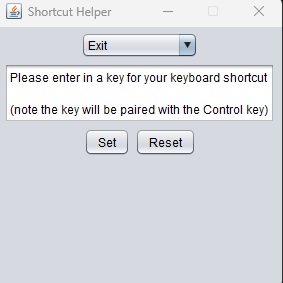
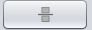
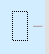

Looking at the header of Fragile, you'll see 7 different drop down menues to choose from. The first of them being the File drop down menu. By scrolling over the File drop down menu, you will be presented an Exit button. This button will close the program. An alternative way to close Fragile is by simply closing the window in the top right of the frame. There is also button labled New Calculator. This button will open a new instance of the calculator. Lastly there's a Print Session button, this will allow you to print out your current calculator history session, out to a paper medium.
Explore the "Mode" header in Robust, featuring two checkboxes. Enable Improper Fractions for a broader range of fractional displays. Activate Reduced Fractions to simplify and streamline fraction results. These options in the "Mode" section provide customization for your mathematical expressions.

Take a look at the "View" menu. There's a neat feature there – tick the Pie Charts box. Your results will transform into cool pie charts. It's right there in the "View" section, giving your data a more engaging look.

Go to the "Style" menu. It lets you mess around with how fractions appear. You've got options like Bar, Slash, or Solidus. Go to the "Style" part, and make your math expressions look the way you want.

Need help? Click on "Help." You'll find an About section with version and developer info, and there's a Help File page for any questions you've got. (The current page).

Within the "Shortcuts" menu, you can access a dedicated window for modifying keyboard shortcuts. This functionality allows you to either rebind existing shortcuts or create new ones according to your preferences. Additionally, if needed, there's an option to reset the key bindings to their default configurations.
In "Preferences," efficiently save and load settings via the file explorer. This menu also offers a practical feature for calculating numbers with thousand comma separators.

Here we have the main interface for the mixed fraction calculator. Like most calculators it features a numberpad made up of soft buttons, mathmatical operations and an "=" button. This calculator also features and additional operations not typically found on a calculator, like a boolean output operator, a simplify button, and a Fraction / Focus change button.
Since this is a mixed fracton calculator we need a way to create these fractions. The way Fragile achives this is by allowing the user to change the focus on what number in the fraction they want to modify. As indicated by the rectangle in the viewing frame shown below.
Pressing the fraction button will move the rectangle to the numerator then the denominator then back to whole number position. Allowing the user to modify any given number as many times before deciding to perform a calculation.
To get started with performing a calculation, you must input the first mixed fraction you would like to be performed on. To achieve this, fill out the numerator and denominator using the focus feature mentioned previously.

This is an example of a valid input. If an invalid input is provided the user will be greeted with this error message.

Once a valid input is provided. Choose the mathmatical operation to be performed.(The operations listed are as follows. Addition, Subtraction , Multiplication, Division, Median, Inequalites, and lastly the boolean operator).

After the mathmatical operation has been selected. Input the second mixed fraction to be performed on. Repeat the first step of this process. After the second fraction has been input. Proceed to press the "=" button to evaluate the expression. The resulting expression will be presented as the image below.

The keyboard shortcuts listed below allow you to easily pick any menu item wihtout having to take your hand off the keyboard! And along with the shortcuts Frgile also allows you to input numbers into the calculator with your number pad.